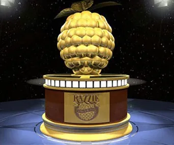
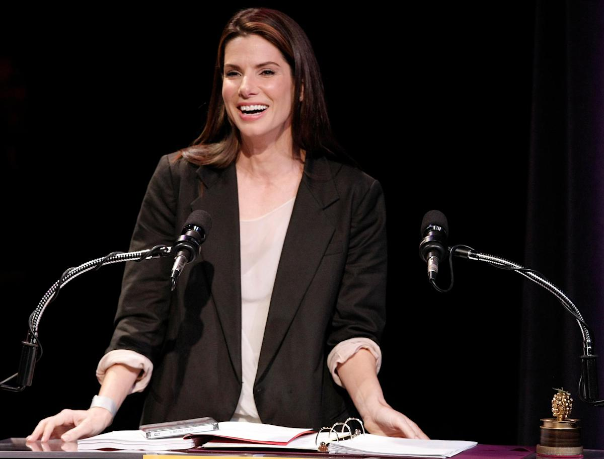

The Golden Raspberry Awards (also known as the Razzies and Razzie Awards) is a parody award show honoring the worst of cinematic under-achievements. Co-founded by UCLA film graduates and film industry veterans John J. B. Wilson and Mo Murphy, the Razzie Awards' satirical annual ceremony has preceded its opposite, the Academy Awards, for four decades. The term raspberry is used in its irreverent sense, as in "blowing a raspberry". The statuette itself is a golf ball-sized raspberry atop a Super 8mm film reel spray-painted gold, with an estimated street value of $4.97. The Golden Raspberry Foundation has claimed that the award "encourages well-known filmmakers and top notch performers to own their bad."
The first Golden Raspberry Awards ceremony was held on March 31, 1981, in John J. B. Wilson's living-room alcove in Hollywood, to honor the perceived worst films of the 1980 film season. To date, Sylvester Stallone is the most awarded actor ever with 10 awards.

The first Golden Raspberry Awards ceremony was held on March 31, 1981, in John J. B. Wilson's living-room alcove in Hollywood, to honor the perceived worst films of the 1980 film season. To date, Sylvester Stallone is the most awarded actor ever with 10 awards.
Sandra Bulock once won Golden Raspberry, it was the same year when she has earn her Oscar. She went to Golden Raspberry gala and received the award, while she was carrying her Oscar with her.
